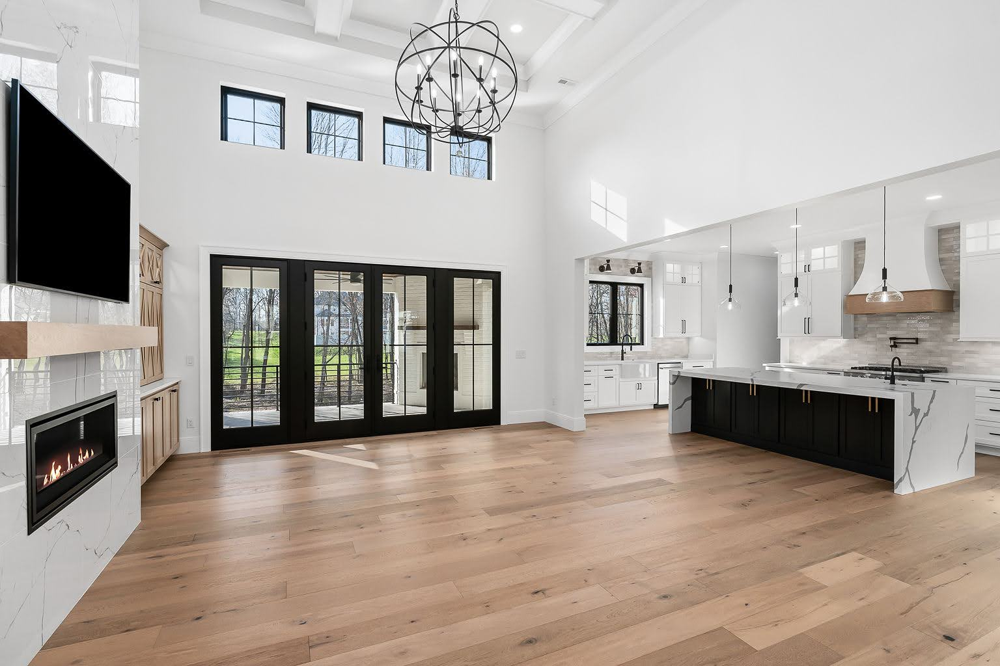
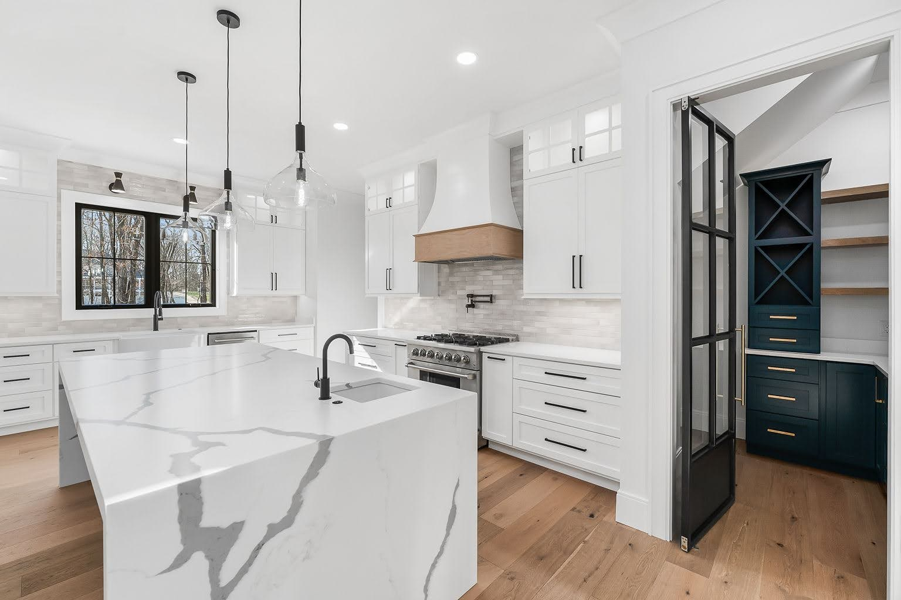
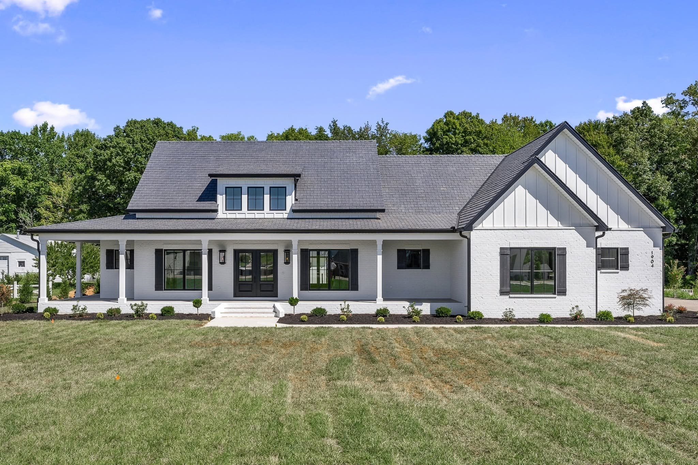
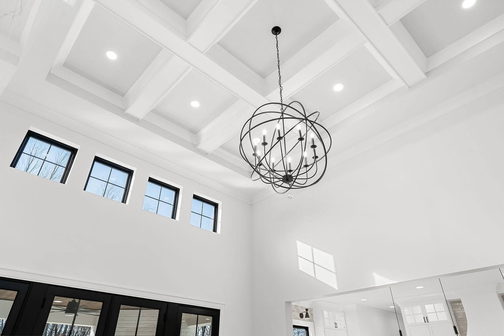
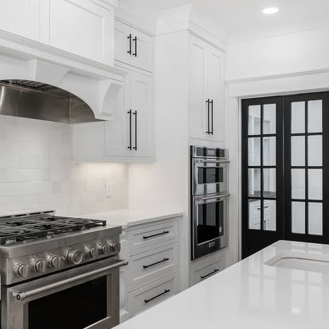
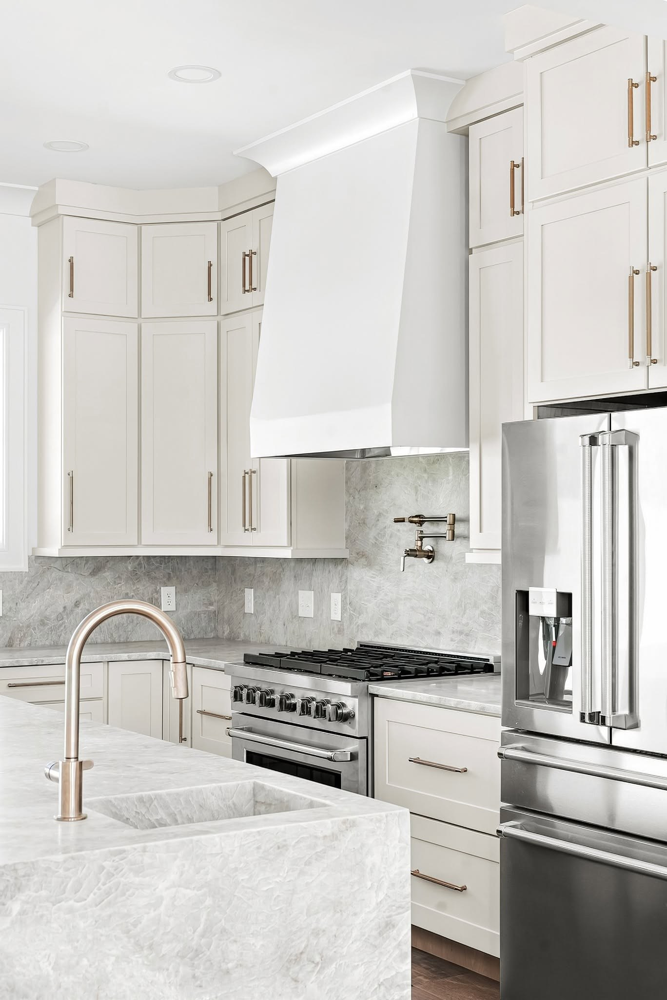
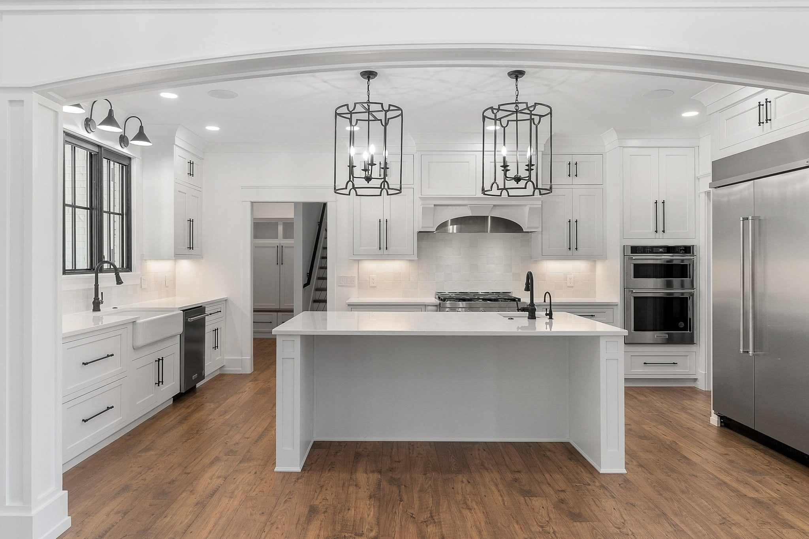
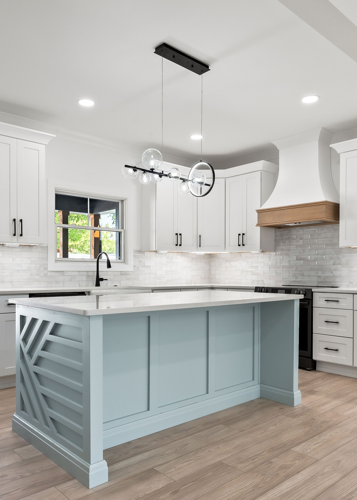
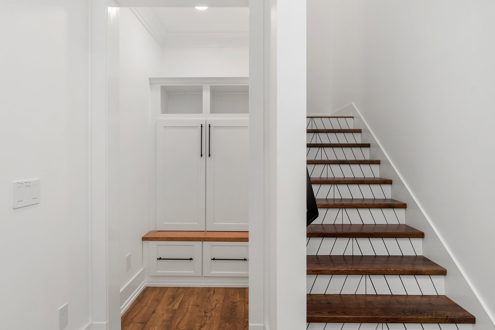

A guide for new clients
The home you've been picturing begins with a conversation.
What happens between our first meeting and the day we sign a contract, laid out in five phases.

Thank you for thinking of us for your home.
You've probably been thinking about this house for a while. Maybe you already own the land, maybe you're still looking, and maybe you have a folder of saved photos that nobody else has seen yet. Wherever you're starting from, this guide shows you exactly what happens between today and the day we sign a contract, so nothing about the process feels like a mystery.
Building in the Upper Cumberland means working with real slopes, rock, and weather, and every one of those things shapes the house and the budget. We'd rather walk you through all of it now than have you find out along the way. Over the next few pages you'll see the five phases we take every client through before a single truck shows up on your property.
We're glad you're here, and we're looking forward to getting started.
Who We Are
Flynn Development is a custom home builder based in Cookeville, and every home we build is within a short drive of our office. The crews on your job, the subs we call, and the suppliers we buy from are people we work with week after week. Our work runs through one process from the first meeting to the final walkthrough, and the pages that follow cover the part of it that happens before any dirt moves.
- Based in Cookeville
- Building across the Upper Cumberland
- Licensed general contractor

Your Process
The five phases that happen before we break ground.
- 01Initial Meeting
We sit down together and learn everything you want in your home: the style, the size, and the budget you're working with. That conversation sets the direction for everything after it, so the guidance you get from us is based on what you actually want.
- 02Site Meeting
We come out to your land, gauge the elevation, and work out how the foundation will be handled. The land plays a huge role in cost, and seeing it in person lets us price the home far more accurately than a plan on paper ever could.
- 03Design
We bring in the architect and begin drawing the plans for the exact home we'll build. The drawings grow out of the first two meetings, so the style you described and the ground you're building on are both in the plans from the start.
- 04Final Estimate
Once we've seen the land, finished the plans, and understand your aesthetic, your must-haves, and your non-negotiables, we run a second, detailed estimate. This one prices every part of the home as accurately as possible, because the open questions from the first meeting have all been answered.
- 05Contract
We move into the contractual phase. The finished plans and the final estimate become the agreement we build from, and signing it is the point where the project becomes official.

Phase 01
The Initial Meeting
The first meeting is a conversation. We sit down with you and learn everything you want in your home: the style you're drawn to, the size that fits your family, and the budget you're working with. We'll ask how you live day to day, what you've seen in other homes that stuck with you, and what you'd never want in your own.
Everything you tell us in that meeting becomes the information we use to guide you through every phase after it, so the plans, the estimate, and the contract are all built around what you actually want.
- StyleThe look and feel you want, inside and out.
- SizeBedrooms, baths, and the spaces you'll use the most.
- BudgetThe range you're comfortable with, so we design to it from the start.

Phase 02
The Site Meeting
After the first meeting, we come out to your land. We walk the property with you, gauge the elevation, and work out how the foundation will be handled, whether that means a slab, a crawl space, or a walkout basement on a slope.
The land plays a huge role in what a home costs. Grading, fill, the foundation type, the driveway, and how far utilities have to run all change with the ground, and none of it shows up on a floor plan. Seeing the site in person lets us price your home far more accurately than a plan alone could.
- ElevationHow the ground falls and where the house sits best.
- FoundationSlab, crawl space, or basement, decided by the land.
- AccessDriveway length, utility runs, and septic placement.

Phase 03
Drawing the exact home we'll build.
With the first two meetings behind us, we bring in the architect and begin drawing the plans for the exact home we'll build. The architect starts from everything you told us in the initial meeting and everything we learned on your land, so the drawings reflect the style you want and the ground the house will sit on.
Design is a back and forth. You'll see the plans as they take shape, we'll walk through them together, and the changes you ask for go into the next round. It's normal for the layout to shift once you see it drawn, and this is the phase where those shifts are easy to make.
When the set is finished, it becomes the basis for the final estimate and, after that, the contract. Every number in the next phase is priced from these drawings, which is why we don't estimate in detail until they're done.
- Floor plansEvery room, drawn to scale, with the flow you described.
- ElevationsWhat the house looks like from each side, with materials called out.
- Site planWhere the home sits on your land, with the driveway and septic placed.

Phase 04
The Final Estimate
By this point we've walked your land, the plans are finished, and we understand your aesthetic, your must-haves, and your non-negotiables. That's when we run the second estimate. Any numbers we've talked through before now came from the conversation and the site visit. This one comes from the finished drawings, and it prices every part of the home in detail, from the foundation the site calls for to the finishes you've pointed at along the way.
You'll see it as a line by line breakdown, so you know what each part of the house costs and where a change would move the number. If something lands higher than you expected, this is the place to adjust it, because the plans and the estimate are still yours to shape before anything is signed.
- PlansThe finished set from Phase 03, priced line by line.
- LandThe foundation, grading, and site work your property calls for.
- SelectionsThe finishes and fixtures you've chosen along the way.
Phase 05
The Contract
With the plans finished and the estimate in hand, we move into the contractual phase. The contract puts everything from the first four phases in writing: the drawings we're building from, the price we've agreed on, the schedule, and how changes get handled once we're underway.
We'll go through it together before you sign anything, and we'll answer every question you have about it. Signing is the point where the project becomes official, and the next guide in this series picks up from there.

How to Prepare
What to bring to the first meeting.
You don't need much to get started, and none of it has to be polished. These four things give us the most to work with on day one, and if you're missing one of them, come anyway and we'll work around it.
- 01A survey or plat of your land
If you already own the property, bring the survey or the plat from your closing. It shows us the boundaries, the easements, and the shape of the lot, which is where the site meeting starts. If you're still looking at land, bring the listing and we'll talk through it together.
- 02Inspiration photos
Bring the screenshots, the saved posts, the folder on your phone, and the pages you tore out of a magazine. Anything that shows the look you're drawn to helps, inside and out, and it doesn't have to agree with itself yet.
- 03A budget range
You don't need an exact number. A range you're comfortable with, along with a sense of whether you're paying cash or financing the build, lets us design to it from the first sketch instead of cutting back later.
- 04Your must-haves and non-negotiables
Write down the things the house has to have and the things you won't compromise on, whether that's a main level primary suite, a covered back porch, or a shop out back. Knowing them early keeps them in the plans from the first draft, and it tells us where there's room to flex if the numbers need it.

Logo goes here in place of the wordmark · vector file needed
The next step is a conversation.
Call or email when you're ready and we'll set up the first meeting. Bring what you have, even if it's only a piece of land and a folder of photos, and we'll take it from there.
- Phone931-510-6147
- Emailinfo@moderndevelopment.co
- Websiteflynndevelopment.co
- Office1227 N Washington Ave, Suite 202, Cookeville, TN 38501